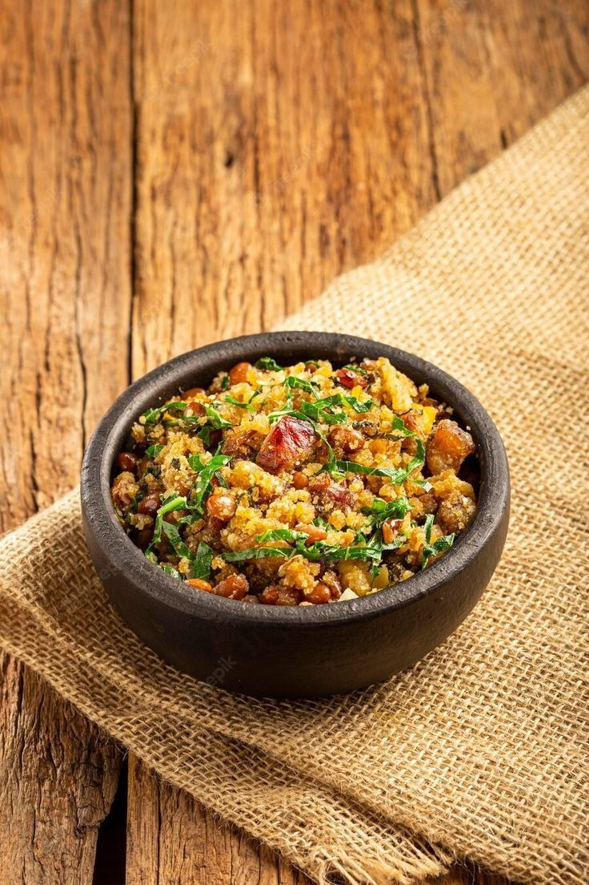

Feijão Tropeiro
O Feijão Tropeiro é um prato tradicional de Minas Gerais e do Sul do Brasil, feito com feijão, farinha de mandioca, carne de porco, linguiça e ovos. Um prato saboroso, completo e muito nutritivo.

Ingredientes
Serve 4 porções
- 2 xícaras de feijão carioca ou feijão manteiga cozido
- 200 g de bacon em cubos
- 150 g de linguiça calabresa em rodelas
- 1 cebola média picada
- 2 dentes de alho picados
- 2 ovos cozidos picados
- 1 xícara de farinha de mandioca
- Sal e pimenta-do-reino a gosto
- Salsinha picada a gosto
Modo de Preparo
Tempo estimado: 45 minutos
- Em uma panela grande, frite o bacon até dourar.
- Acrescente a linguiça e frite por alguns minutos.
- Adicione a cebola e o alho, refogando até ficarem macios.
- Junte o feijão cozido, mexa bem e tempere com sal e pimenta.
- Adicione os ovos picados e misture delicadamente.
- Acrescente a farinha de mandioca aos poucos, mexendo até obter uma mistura úmida, mas soltinha.
- Finalize com salsinha picada e sirva quente.
Dica do Chef: Para um sabor ainda mais autêntico, utilize carne de porco fresca, torresmo crocante e farinha de mandioca de qualidade. Sirva acompanhado de arroz branco e couve refogada.